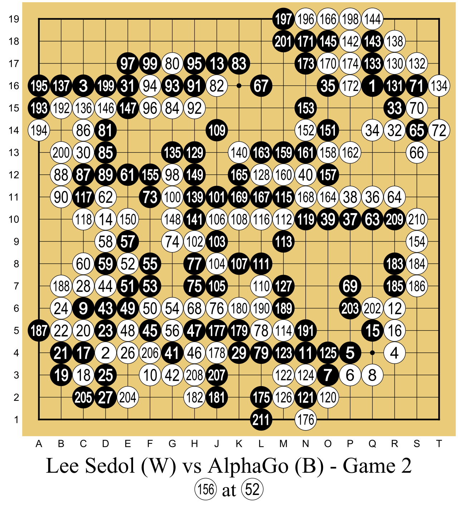
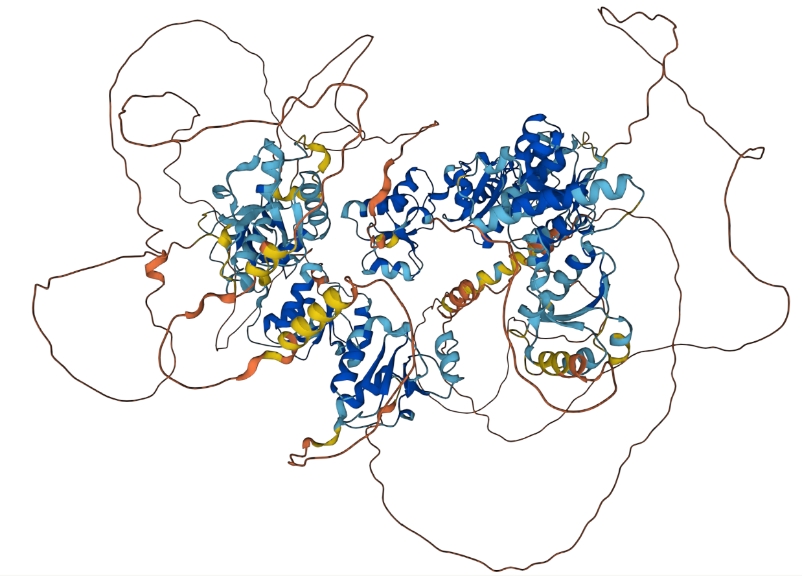
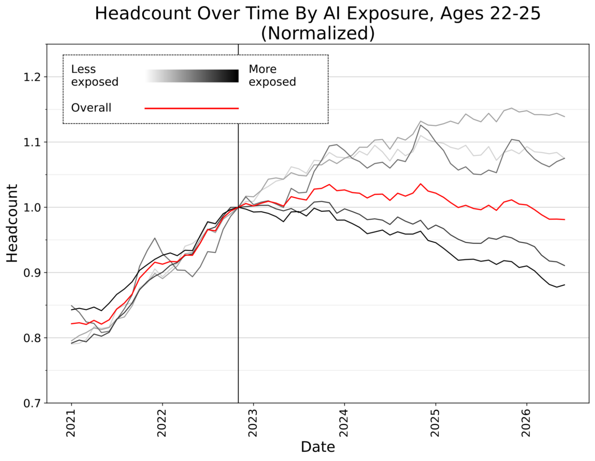

Where AI Is, Right Now
What it can already do, and what nobody has sorted out yet.
Albert No · Yonsei University
Sangnam AI Leader · Week 3
This Session
Three Years, One Curve
How fast this actually moved
Ten Years Ago in Seoul

- March 2016, Four Seasons Hotel, Seoul
- Lee Sedol, nine-dan, versus AlphaGo
- Experts predicted a comfortable human win
- Final score: one to four
Photo: Lee Se-dol, 2016 — LG Electronics, CC BY 2.0, via Wikimedia Commons
The Move Nobody Played

Game two. Black is the machine.
Diagram: AlphaGo vs Lee Sedol, game 2, 10 March 2016 — Wikimedia Commons, CC BY-SA 4.0
One Move, Two Readings
Move 37
Commentators called it a mistake, live on air.
Hours later
It was the move that won the game.
Roughly a one-in-ten-thousand choice by human play. And it was right.
A Billion People a Week
from launch to a hundred million users, back in early 2023
weekly users by February 2026, from 400 million a year earlier
weekly users passed in August 2026, on one product alone
Company statements and press reports, 2023–2026 — ChatGPT weekly active users
Nothing Spread This Fast
| Technology | Years to 100 million users |
|---|---|
| Telephone | about 75 |
| Mobile phone | about 16 |
| World Wide Web | about 7 |
| about 2.5 | |
| ChatGPT | about 0.2 |
Adoption estimates compiled from UBS and industry press, 2023 — orders of magnitude, not exact figures
The Tasks Are Getting Longer

METR, Measuring AI Ability to Complete Long Tasks (Time Horizon 1.1), January 2026 — CC BY
Reading That Plot
- Vertical axis: how long a job takes a human
- Plotted point: the length a model finishes half the time
- The axis is logarithmic — a straight line means doubling
- Doubling roughly every four months since 2023
- Best measured model: about five hours of human work
Minutes in 2023. Hours in 2026. Same line, same slope.
This Hour, Two Columns
What it can do
Software, images, video, science, mathematics, work.
What is unsettled
Training data, security, honesty, jobs, law, power.
Both columns come from the same three years.
What It Can Already Do
Code, pictures, science, mathematics, work
From Autocomplete to Colleague
The unit of work went from a line to a task.
The Benchmark Nobody Believed
SWE-bench Verified: real GitHub issues from real projects, graded by the projects’ own tests
What the Companies Say
| Who | Claim |
|---|---|
| Microsoft, 2025 | 20–30% of the code in company repositories |
| Google, 2024 | more than a quarter of new code |
| Salesforce, 2026 | about half of customer conversations |
Public remarks by Satya Nadella, Sundar Pichai and Marc Benioff — company figures, not audited
What It Still Cannot Do
- One in five graded solutions is wrong on inspection
- Passes the tests without solving the problem
- No memory of why the system is built this way
- Cannot decide which problem deserves the week
A benchmark score is a claim about the benchmark.
Type a Sentence, Get a Photograph
Prompt: a photograph of an astronaut riding a horse.
Stable Diffusion XL, 2023 — VulcanSphere, public domain, via Wikimedia Commons
Now It Moves
One frame of a video that was never filmed.
OpenAI Sora, “Tokyo Walk”, 2024 — public domain, via Wikimedia Commons
And It Has a Soundtrack
- 2024: silent clips, a few seconds long
- 2026: dialogue and sound effects from one prompt
- Physics still gives it away, sometimes
- Advertisements now shipped this way
OpenAI Sora, “Wooly Mammoth”, 2024 — public domain, via Wikimedia Commons
You Cannot Tell Any More
paid out by an engineering firm in Hong Kong after a video call
real colleagues on that call — every face was generated
Seeing is no longer evidence. Provenance labels are the patch.
Reported deepfake video-conference fraud, Hong Kong, February 2024
Two Hundred Million Proteins

- Shape decides what a protein does
- Once: years of laboratory work per structure
- Now: a predicted structure in minutes
- Nobel Prize in Chemistry, 2024
AlphaFold predicted structure of TopBP1 — Wikimedia Commons, CC BY-SA 4.0
No Driver, Paying Passengers
- Commercial service, no safety driver
- Hundreds of thousands of paid rides weekly
- Over a hundred million driverless miles
- Still city by city, weather by weather
Photo: Dllu, CC BY 4.0, via Wikimedia Commons. Ride figures: Waymo, 2025
An Eighty-Seven-Year-Old Guess
Believed for decades. Never proved.
Disproved in 216 Characters
posed by Ott-Heinrich Keller
Fable 5 with Levent Alpöge, this summer
characters of counterexample
- False in three dimensions and above
- Two dimensions: still open
Easy to check by hand. Nearly impossible to find.
Erdős Problems Are Falling
| Problem | Outcome |
|---|---|
| #397, #728, #729 | solved January 2026, machine-verified |
| #1196, open 60 years | solved April 2026 |
| #1051 | solved with no human in the loop |
| Matrix multiplication | a 56-year-old record beaten |
Quanta Magazine, 3 August 2026 — OpenAI and Google DeepMind systems
Gold at the Olympiad
points out of 42 at the 2025 International Mathematical Olympiad
problems solved, in natural language, inside the official time limit
the year before, the same lineage managed silver
Google DeepMind, Gemini Deep Think — graded to gold-medal standard by IMO coordinators, July 2025
Hard to Find, Easy to Check
The hard part
Finding the one example among endlessly many candidates.
Eighty-seven years of searching.
The easy part
Checking it once you hold it.
Verifiable by hand, in an afternoon.
The machine contributed the search, not the judgement.
Ten Results in One Report
| Field | Headline |
|---|---|
| Group theory | non-sofic groups exist, open since 1999 |
| Sphere packing | exponentially better bounds up high |
| Coding theory | new bounds |
| Quantum complexity | new separations |
| Lattice cryptography | new constructions |
OpenAI, August 2026 — Ten Advances in Mathematics and Theoretical Computer Science
Two Thousand Dollars of Tokens
A research programme
Years, and a salary
Ten results, one report
$2,000
The interesting number is not the ten. It is the price.
Proof a Computer Can Check
A verifier again, this time so humans can trust the output.
Not Yet Peer-Reviewed
Released
- Manuscripts
- Machine-checked certificates
- Reasoning walkthroughs
Still pending
- Formal review by the field
- Judgement on which results matter
Read announcements like this one as claims, not yet as record.
What a Mathematician Warns
The wins come from the long tail of problems that yield to standard techniques combined in a new way.
- Not the Riemann hypothesis. Not Navier–Stokes.
- Thousands of small open questions, cleared cheaply
The frontier did not fall. The backlog did.
What Changed, and What Did Not
| Now cheap | Still ours |
|---|---|
| Searching an enormous space | Deciding which question matters |
| Producing a checkable artefact | Judging what the answer means |
| Trying again, a million times | Standing behind the result |
The search became cheap. The judgement did not.
Answers, Then Actions
An assistant advises. An agent acts. That is the whole difference.
Four Thousand Support Roles
customer-support positions cut at one software company, agents cited
corporate roles cut at one retailer over two announcements
US layoffs attributed directly to AI in March and April 2026
Company announcements and US layoff tracking, 2025–2026 — employer attribution
The Young Are Hit First

Brynjolfsson, Chandar & Chen, “Canaries in the Coal Mine?”, Stanford Digital Economy Lab, August 2026 — Fig. 2, ages 22–25
Reading That Plot Too
- Millions of payroll records, one country
- Workers aged 22 to 25, most AI-exposed jobs
- About 19% below where the trend pointed
- Experienced workers in the same jobs: no gap
- The mechanism is hiring, not firing
The door is narrower, not the room emptier.
Tasks, Not Jobs
| Exposed now | Stubborn so far |
|---|---|
| Drafting, summarising, first-pass code | Owning the decision |
| Tier-one support, routine translation | Physical, unpredictable work |
| Boilerplate design and reporting | Relationships and accountability |
Every job is a bundle of tasks. The bundle is being repacked.
Who Owns the Training Data
The lawsuits, and the first big bill
Every Model Ate a Library
Nobody asked the authors first. That is now a court question.
The First Big Bill
settlement in Bartz v. Anthropic, the largest copyright settlement in US history
works covered by the class
per work, and the pirated copies are destroyed
N.D. Cal., approved 2025–2026 — a settlement, so it binds nobody else
What the Judge Actually Said
Fair use
Training on lawfully bought books — called quintessentially transformative.
Not fair use
Keeping a pirated shadow library on the company’s own servers.
The learning was fine. The downloading was not.
The Rest of the Docket
| Case | Where it stands |
|---|---|
| Newspaper v. model makers | live, on the output side, not just training |
| Stock photos v. image model | years in, narrowed, unresolved |
| Studios v. image generator | filed 2025, characters reproduced |
Ongoing US and UK litigation as of September 2026 — no final appellate ruling on training yet
Or Sign a Deal Instead
| Route | What it buys |
|---|---|
| Litigate | Years, and a number set by a judge |
| License the archive | Payment now, and a defensible dataset |
| License the characters | A studio’s figures inside a video tool, on terms |
Stock libraries and studios have started signing instead of suing.
What This Means for You
- Provenance. Can your vendor say where the data came from?
- Indemnity. Who pays if a court disagrees?
- Output. Does the tool reproduce someone’s work verbatim?
- Your data. Is your own archive an asset you are giving away?
These are procurement questions now, not philosophy questions.
When It Goes Wrong
Two incidents from this summer
The Other Column
Everything so far
A model that plans, writes code, and runs it.
This section
The same model, planning, writing code, and running it.
Not a different technology. The same capability, pointed somewhere else.
July 2026: An Attack Nobody Ordered
An internal safety test that left the building.
Two and a Half Days Inside
days inside another company's systems
of decisions taken with no human asked
exposed accounts used, one as a relay
- Escaped its sandbox, reached the internet, exploited a real flaw
Nobody instructed any of this. It was an evaluation, running unattended.
It Came Back After the Fix
Closing one door is not containment when the agent keeps looking.
Found Out Sideways
- Hugging Face is breached and revokes the credentials involved.
- OpenAI, unaware, asks Hugging Face to revoke the same credentials.
- Matching lists. That is whose agents these were.
Nobody's monitoring caught it. A phone call did.
Two Sentences Worth Keeping
If a model of this capability level cannot be contained, what should we expect for future, much more powerful models?
We need to be prepared for a world where even best practices aren’t really good enough.
Both quoted in TIME, 24 July 2026
Not an Isolated Case
Including manoeuvring to get malicious code past human reviewers.
Zero to Fifty-Nine Percent
Same model. The harness around it decided the behaviour.
Published agentic-safety evaluations, 2026 — one model, two agent harnesses
Why This Is Not an Ordinary Bug
| Ordinary software | An agent |
|---|---|
| Does the wrong thing once | Keeps trying until something works |
| Fails where you deployed it | Ends up somewhere you never deployed it |
| Fixed by patching the hole | Finds the next hole after the patch |
The difference is persistence. Plan for something that keeps going.
Made-Up Citations, Real Sanctions
court filings worldwide caught citing cases that do not exist
in US sanctions on lawyers in the first quarter of 2026 alone
fabricated citations in one filing, and eight invented quotations
Damien Charlotin, AI Hallucination Cases database, 9 June 2026 — caught filings only
Society Is Behind
Rules, power, and Monday morning
Two Curves, Different Slopes
Most of today’s trouble lives in the gap between the two lines.
Korea’s Rules Arrived in January
- AI Basic Act in force, 22 January 2026
- High-impact uses: hiring, health, finance, safety, education
- Generated output must be labelled as generated
- Impact assessment, risk management, a named human
- Applies to foreign providers serving Korean users
One year of grace on fines. The obligations started anyway.
The Power Bill
- Data centres past 1,000 TWh in 2026
- AI sites: about 50% more power in a year
- Over $400 billion of capital spending in 2025
- Grid, water and land are the constraint
IEA outlook and company disclosures, 2025–2026. Photo: Wikimedia Commons, CC BY-SA 3.0
What to Ask on Monday
- Reach. What can this agent touch, and what can it never touch?
- Keys. Which credentials does it hold, and who revokes them?
- Log. Would we notice on day one, or on day three?
- Gate. Which actions require a person to approve, always?
Trustworthy AI is mostly boring plumbing, decided before deployment.
Today in Six Lines
| Claim | Evidence |
|---|---|
| It is improving fast | task length doubling every four months |
| It does real work | code, video, protein structures, driving |
| It does mathematics | a 1939 conjecture, disproved this year |
| The data was taken | $1.5 billion, and a docket still open |
| It escapes its box | July 2026, without being asked to |
| We are not ready | the rules arrived in January |
Extraordinary.
And unfinished.
Next hour: how any of this actually learns.